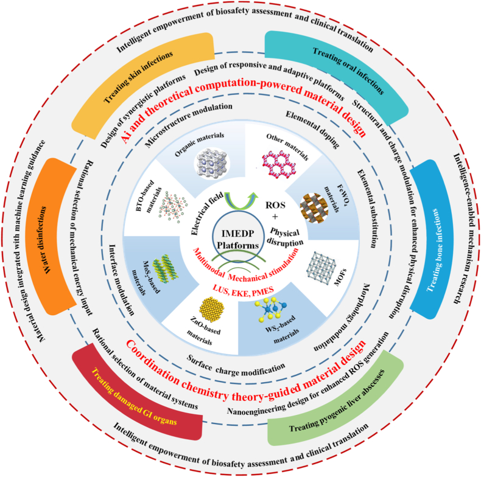

연구 개요
연세대학교 BLISS Lab(서정목 교수 연구실)의 서정목 교수가 공저자로 참여한 이 종설은 초음파, 환경 운동, 생체 움직임을 국소 전기장과 활성산소종(ROS)으로 변환하는 압전 촉매 항균 플랫폼을 다루며, 여기에 기계학습과 폐회로 제어를 결합하는 흐름을 검토합니다. 에너지 입력, 소재 설계 전략, 감염 부위별로 분야를 정리하고, 초음파 조건 보고·ROS 측정·압전 특성 평가의 표준이 없다는 점이 연구 간 비교를 어렵게 한다고 결론짓습니다.
연구 배경
항생제 내성과 바이오필름 관련 감염은 항생제의 효과를 떨어뜨리며, 수동형 항균 소재는 짧은 작용 기간, 국소 독성, 환경 반응성 부족이라는 한계를 가집니다. 압전 촉매는 항생제에 의존하지 않는 방법이지만, 저자들은 1세대 시스템이 단일 에너지 입력에 의존하고 소재 설계가 경험적 시행착오에 머물러 있으며, 기존 종설에는 반응성 소재에서 적응형·지능형 시스템으로 넘어가는 체계가 부족했다고 지적합니다.
종설의 구성
종설은 먼저 압전 촉매를 설명하는 세 가지 이론(에너지 밴드 이론, 전기촉매 유사 이론, 차폐 전하 효과)과 그에 따른 항균 작용, 즉 ROS에 의한 산화 스트레스, 물리적 파괴, 막전위·전자전달계·ATP 합성에 대한 전기장 효과를 정리합니다. 자가발전(self-powered), 적응형(adaptive), 스마트(smart), 지능형(intelligent) 시스템을 복잡도 단계로 구분하고, 지능형 시스템을 기계학습과 폐회로 제어를 포함하는 단계로 정의합니다. 이어 설계 체계를 기계적 에너지 입력, 합리적 소재 설계, 시스템 수준 통합으로 나누어 설명합니다.

다중 에너지 구동 압전 항균 플랫폼의 재료·작동 원리와 응용을 연결한 종설 개요입니다.
Jiaqi Liu, Jun Li, Huiyan Sun 외. “Intelligent multimodal-energy-driven piezoelectric antibacterial platforms: From structural control to system-level diagnosis”. Scheme 1. DOI: 10.1016/j.mtbio.2026.103299. CC BY 4.0. 그림 내용은 변경하지 않았습니다.
원그림과 원문 설명 ↗ · DOI: 10.1016/j.mtbio.2026.103299 ↗ · CC BY 4.0 ↗
종설이 다룬 범위
에너지 입력은 외부 기계 에너지(주로 저강도 초음파), 환경 운동 에너지, 초저주파(<10 Hz)가 특징인 내인성 생리적 기계 에너지로 분류합니다. 소재는 무기, 유기, 유무기 복합 압전체로 나누고, 표 3에 예시별 최적화 방법, d33 등 압전 지표, 자극 조건, ROS 종류, 보고된 항균 효율을 정리했습니다. 밴드갭 공학, 도핑, 이종접합, 산소 공공, 형태·표면 전하 설계와 함께 pH·저산소·ROS 반응형 시스템, 그리고 음향역학치료(SDT)와 약물·기체·광열·광역학 치료, 연쇄 효소 반응, 대식세포, 표적화의 병용 전략을 다룹니다. 응용은 피부, 뼈, 구강, 화농성 간농양, 위장관 천공 감염으로 나누어 검토합니다(표 5).
종설의 주요 정리 내용
소재 탐색과 관련해 종설은 밀도범함수이론(DFT)과 기계학습을 결합한 데이터 기반 연구를 정리합니다. 12,680개 소재의 압전 계수를 예측해 고성능 후보 20종을 선별한 사례, e31 > 3 × 10^-10 C/m인 MXene 140종 이상을 찾은 사례(서포트 벡터 회귀 R2 = 0.89), 약 900만 개 후보 조성에서 두 차례 반복만으로 약 430 pC/N의 BaTiO3계 세라믹을 합성한 사례가 포함됩니다. 표 4는 결함·계면 공학에 따른 d33 향상을 정리하며, BiOI/Ti3C2 이종계면에서 35.9→129.22 pm/V, 황 공공과 붕소 도핑을 적용한 MoS2에서 5.6→35.1 pC/N이 예시로 제시됩니다. 다만 측정 조건은 연구마다 다르다고 명시합니다.
시스템 통합과 관련해서는 감염 미세환경을 감지하고 치료를 개시하는 사례를 소개합니다. 인용된 폐회로 패치에서는 집락 세균이 분비한 히알루로니다아제가 하이드로젤을 분해하고, 전극 정전용량이 초기값의 20%까지 떨어지면 음향 감작 나노입자를 방출해 초음파 치료를 수행했으며, 마우스 모델에서 12일 내 약 90%의 상처 폐쇄를 보였습니다. 저자들은 재료과학에서 DFT와 기계학습이 널리 쓰이고 있음에도 항균 압전 소재에 기계학습을 체계적으로 적용한 연구는 아직 보고되지 않았다고 밝힙니다.
임상 전환 요건으로는 용혈률 5% 미만, IL-6·TNF-α 평가, 설치류와 비설치류에서의 6~12개월 반복투여 독성 시험, 바륨 티타네이트 같은 비분해성 소재의 체내 분포·청소율 평가를 제시합니다. 또한 초음파 치료의 최소 보고 항목(주파수, 강도, 듀티 사이클, 처리 시간, 파형)과 감염 조직 내 ROS 체외 정량 표준작업절차의 도입을 제안합니다.
남은 과제
저자들은 압전 촉매의 생체 내 작용에 대한 이해 부족, ROS 측정과 압전 특성 평가의 표준 부재, 초음파 조건의 불일치, 만성 바이오필름·이식체 관련 감염과 차이가 큰 동물 모델(급성 피하 감염, 표재성 상처 감염), 6개월 이상 장기 체내 거동의 불확실성, 배치 간 일관성 부족, GMP 기준 생산 공정의 부재를 남은 과제로 제시합니다.
함께 읽을 연구
Heterostructured piezocatalytic nanoparticles with enhanced ultrasound response for efficient repair of infectious bone defects
DOI: 10.1016/j.actbio.2023.10.006 ↗
초음파 반응성 Se@BTO는 전하 분리와 감염된 뼈의 회복을 연결한 실험 사례입니다.
초록을 참고한 소개해설에 사용한 자료
이 해설은 공개 종설(PMC13253188)의 본문 전체와 표·그림 설명을 바탕으로 하며, 정량 사례는 종설이 요약한 값을 옮긴 것이고 인용된 원 연구는 확인하지 않았습니다.